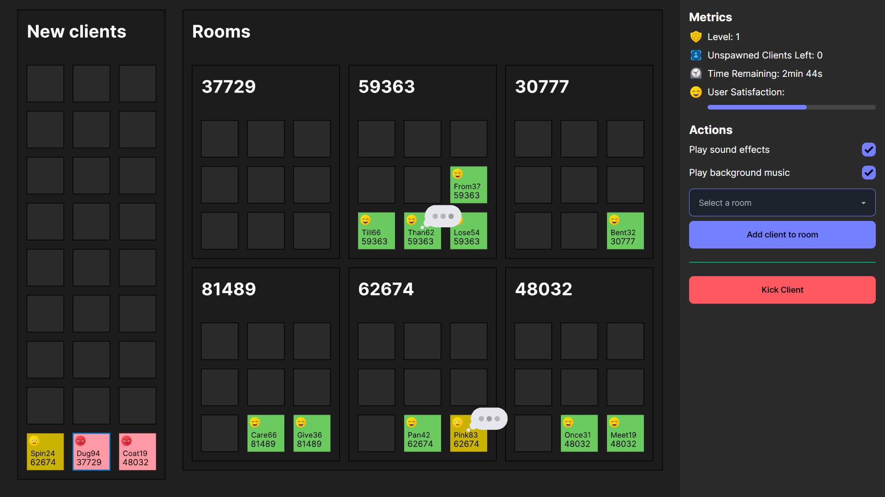
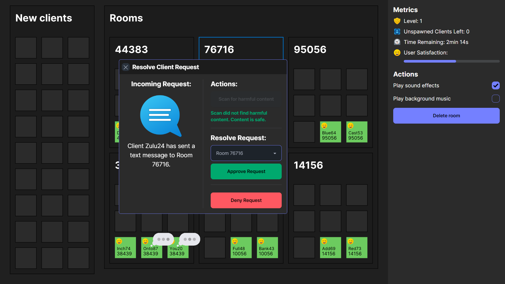
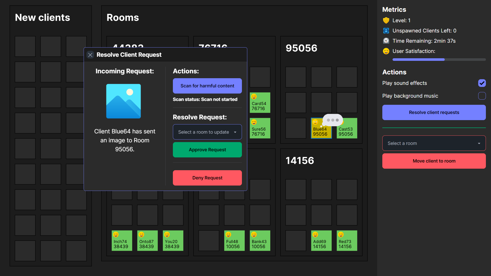
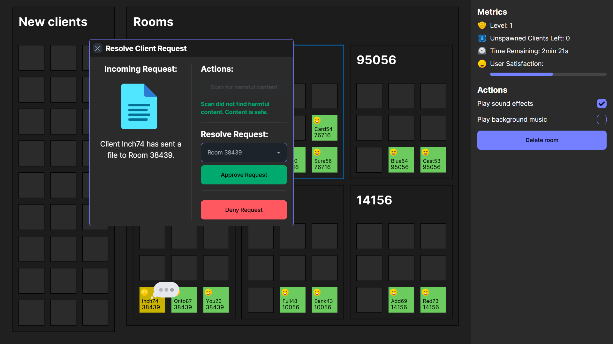

Welcome to You're the Server!
1. Overview:
- You're the Server! is a game where you are a chat server.
- You are the employee of a widely used messaging platform, but the company has recently taken cost-cutting measures, which included ending their Firebase subscription, so now you have to manually run the server!
- As a chat server, you are in charge of:
- Sorting newly joined clients into rooms,
- receiving any files, images, or text messages that the client has sent, and
- protecting other clients in the server from receiving harmful content from a client.
- The objective of this game is to progress to as many levels as possible before you can no longer cope.
- Performing certain actions in the game will either increase or decrease your User Satisfaction. When your User Satisfaction decreases to 0, the game ends.
2. Gameplay:
Basic Gameplay:
- Initially, level 1 has a time limit of 2 minutes and 30 seconds. As you progress to subsequent levels, the time limit increases by 30 seconds, up to a maximum of 4 minutes. If at the end of 4 minutes your User Satisfaction is greater than 0, you automatically progress to the next level.
- At the start of every level, you start with 100 User Satisfaction points. When you progress to the next level, new clients spawn faster, and more new clients are spawned as well.
- At the start of the game, new clients are spawned at the "New Clients" Section. Each client has a username and a designated room code.
- You are to create the rooms for the clients and sort the clients into their corresponding rooms.
- You can do so by first clicking on the "Rooms" section and adding a new room under the "Actions" section, then clicking a new client and sorting them into their corresponding room using the dropdown menu in the "Actions" section.
- Be careful however, as if you take too long, clients can go from being happy to being irritated, and go from being irritated to being angry.
- When a client changes their emotion to one that is more negative, you lose 2 User Satisfaction points. Eventually, if left unattended to for too long, the client will rage quit and leave the server, decreasing User Satisfaction.
- Sorting clients into correct rooms will allow you to gain User Satisfaction points. The number of points you gain depends on the client's emotion when you sorted the client into the correct room. A "happy" client who was sorted into the correct room will yield a greater increase in User Satisfaction than a client who is "angry".
- The "Unspawned Clients Left" metric tells you how many clients are yet to be spawned in the "New Clients" section.
- When the number of unspawned clients left decreases to 0, or there are no more clients in the "New Clients" section, the existing clients in the rooms will begin to make "requests", which you have to resolve.
- When a client makes a request, this is indicated by the speech bubble animation that appears beside them.
Resolving client requests:
- To resolve a client's request, click on the client who is making the request and click the "Resolve Client Requests" button that appears under the "Actions" section.
- Each client can make 1 of 3 requests:
- Sending a text message, 
- sending an image, or 
- sending a file. 
- Requests may be safe or harmful:
- Text messages are always safe, it has a 0% chance of being harmful.
- Images have a 20% chance of being harmful.
- Files have a 40% chance of being harmful.
- To check whether a request is harmful, click the "Scan for harmful content" button.
- If a request is harmful, it should be denied, while if a request is safe, it should be approved in the correct room.
- Resolving requests correctly will yield an increase in User Satisfaction points, based on the number of people in the requesting client's room, and how fast you resolved the client's request. The client making the request will also go back to being happy after the request is correctly resolved.
- Resolving requests wrongly will yield the following outcomes:
- If request is safe:
- If request is approved in the wrong room, all clients in the wrong room degrade their emotion to the next one, i.e. a “happy” client becomes “irritated”, an “irritated” client becomes “angry”, and an “angry” client leaves the server. User satisfaction decreases by the number of people in the wrong room. The client who made that request becomes happy after that.
- If request is wrongly denied, the client who made that request degrades their emotion to the next one. User Satisfaction decreases by 2.
- If request is unsafe:
- If request is approved in the correct room, all clients in the correct room degrade their emotion to the next one, i.e. a “happy” client becomes “irritated”, an “irritated” client becomes “angry”, and an “angry” client leaves the server. User satisfaction decreases by the number of people in that room. The client who made that request becomes happy after that.
- If request is approved in the wrong room, all clients in the wrong room degrade their emotion to the next one, i.e. a “happy” client becomes “irritated”, an “irritated” client becomes “angry”, and an “angry” client leaves the server. User satisfaction decreases by the number of people in that room multiplied by 1.5. The client who made that request becomes happy after that.
- Once again, if you take too long to resolve a client's request, they will first become irritated before becoming angry after some time, eventually rage quitting and leaving the server if they are not attended to. Once again, when a client changes their emotion to a more negative one or leaves the server, User Satisfaction decreases by 2.
Finish